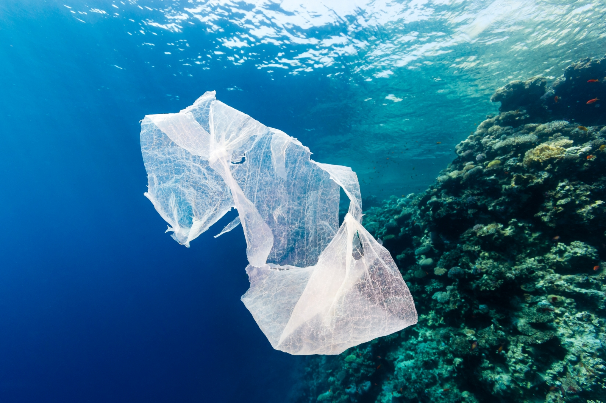
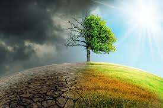

Блог
Екологічність біорозкладних пакетів - це міф
Біорозкладані пластики - це не якийсь певний вид пластику, а велике сімейство різних полімерів. Ці полімери виробляються з рослинної сировини і розкладаються до діоксиду вуглецю і води. Сировиною для цього пластика виступають кукурудза, пшениця, цукровий очерет і інші рослини. Біорозкладний пластик часто можна розпізнати по спеціальному маркуванню. Під час покупки товарів з «розкладних» пластиків важливо розуміти, якою буде їхня подальша доля в наших умовах. Так, біорозкладаний пластик розкладається тільки в певних умовах, яких, як правило, немає на наших звалищах. Для правильної утилізації біорозкладних пакетів їх потрібно компостувати. Ще одним важливим недоліком біорозкладних пакетів є те, що для їх виробництва потрібно багато енергії і води, використання цінних органічних культур, що веде до подорожчання виробництва. При цьому на звалищах вони все одно не розкладаються.
Калькулятор пластикового сліду
Введіть у поля нижче денне споживання:
Введіть у поля нижче щомісячне споживання:
Загальне споживання на рік, штук
Експерти прогнозують глобальне потепління «за гіршим сценарієм»
Незалежна аналітична група Breakthrough – National Centre for Climate Restoration працює в Австралії. Вона включає великих вчених, політиків і громадських діячів і займається проблемами глобальної зміни клімату з 2014 року. Нещодавно група представила нову доповідь, присвячену прогнозами на близьку і середню перспективу, і висновки їх виявилися вкрай жахливими. Зміни клімату названі екзистенціальною загрозою цивілізації, причому, досить близькою: на думку аналітиків, вже до 2050-го життя людства круто зміниться. Ключовим автором доповіді виступив колишній міністр оборони Австралії, адмірал у відставці Кріс Баррі (Chris Barrie), активний захисник природи. На його думку, зміни клімату вже до 2050 року можуть «мати вкрай серйозні наслідки» для безпеки, які не тільки можливі, але і важко прогнозовані, оскільки людство за останні тисячі років не переживала нічого подібного за масштабами. За оцінкою Кріса Баррі, продовження наявних трендів глобального потепління викличе підвищення середньої температури на 3 °С, після чого зміни стануть вже незворотні. При цьому екс-адмірал вважає, що точка неповернення практично пройдена і сьогодні ми стрімко рухаємося до руйнування нормальної біосфери, а разом з нею – і держав, і звичного порядку міжнародних відносин. Величезні маси людей будуть змушені переселитися з місць, які стали безлюдними, і ще більше зіткнуться з браком чистої води. Різко впаде продуктивність сільського господарства, а в поки ще родючих субтропічних зонах воно стане зовсім неможливим. «Навіть потепління на 2 °С означатиме переселення більш ніж мільярда людей, а при менш сприятливих сценаріях масштаби руйнувань опиняються за межами наших можливостей прогнозування, аж до повного кінця цивілізації», – пише Кріс Баррі. Екс-адмірал вважає, що єдиним способом послабити катастрофу буде глобальна мобілізація зусиль усієї світової спільноти. Щось на кшталт того, що відбувалося в роки Другої світової війни, але зосереджене на зниження викидів парникових газів і відновлення клімату Землі. .
До дати неповернення - 2050 залишилось:
00
years00
days00
hours00
minutes00
seconds